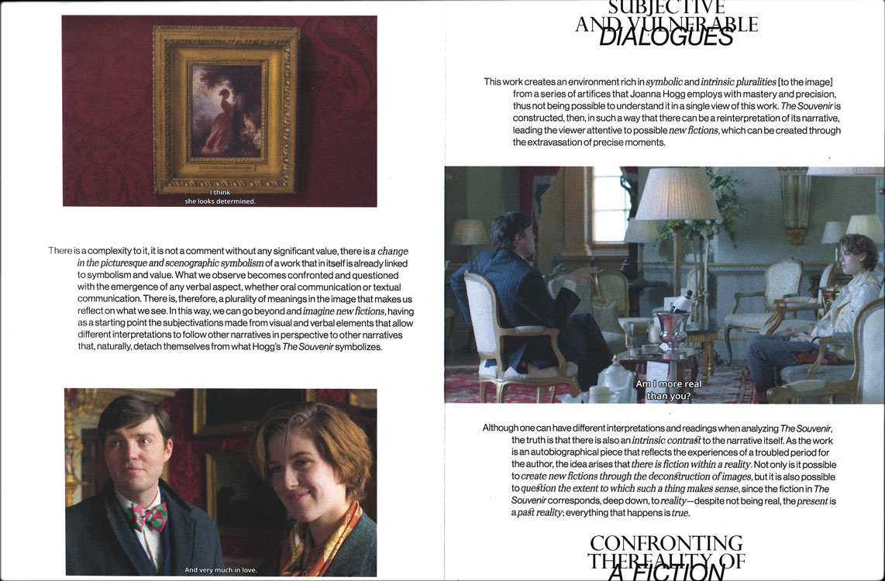
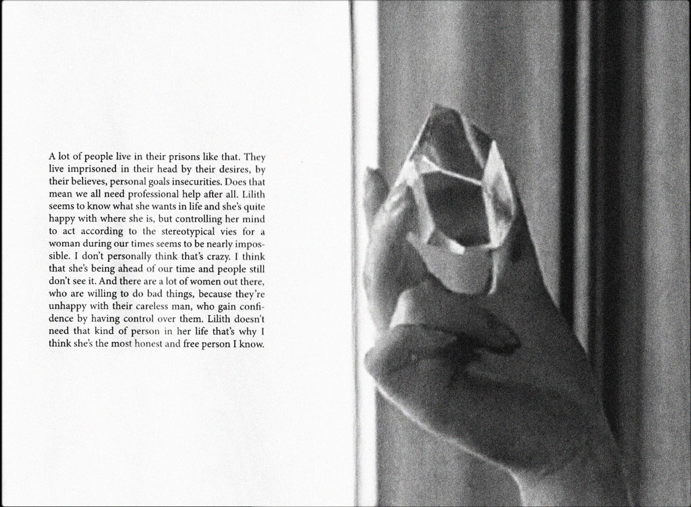

-
Motherhood as Fiction
Uma ficção a partir de The Lost Daughter (2021), de Maggie Gyllenhaal
#Motherhood #Capitalism #State control
-
Mistress America:
Quase alguém: entre a companhia e a solidão
#Womanhood #IdentityCrisis #Feminity
-
Todo Sobre
Mi Madre:Os batimentos de um coração espartilhado e os seus múltiplos estilhaços
#Womanhood #Symbolism #Emotions #FeminineInterior
-
Une Femme est Une Femme:
Toute Les Femmes
#MaleGaze #Women’sRole #GenderRole
-
Klute:
“A Walk on the Wild Side”
#Outcasts #Margins #FeminineInterior
-
HERE, WHERE WOMEN WATCH THEMSELVES BEING LOOKED AT…
Uma ficção a partir de I am Love
(2009), de Luca Guadagnino#FemaleGaze #GenderRoles #FemaleLiberation
-
THE SOUVENIR
An Image as a Process of Creating New Fictions that Transcends the Attributes of Representation
#FeminineInterior #Subjectivity #DualityOfLove
-
Women is Losers:
#1 Portugal
#WomenInDesign #GenderInequality #Patriarchy
-
Matilda:
The Past, Present and Future of Women in Science
#Feminism #GenderInequality #Science
-
Lilith
Insanity, Illness, or a Non-Accepted Norm
#GenderInequality #MentalIllness #Patriarchy
-
Mad Woman
There’s Something Within…
Uma ficção a partir de Thelma
(2017), de Joachim Trier#Stigmatization #MentalIllness #Womanhood
-
EVEN MAD MEN LOVE THEIR MAMAS
Uma ficção a partir de We Need to Talk About Kevin (2012), de Lynne Ramsay
#Marginality #Stigmatization #MentalIllness
-
Titane
Beyond Gender, Beyond Human
#GenderPerformativity #Sexuality #GenderIdentity
-
METAGENESIS
Beyond Gender, Beyond Human
Uma ficção a partir de Titane (2021), de Julia Ducournau
#GenderPerformativity #BodilyActs #HumanEvolution
-
Iris
Beyond Words
Uma ficção a partir de Orlando (1992), de Sally Potter
#Patriarchy #GenderRoles #Emotions
-
Mutantes
Camada a camada, a pele vai engrossando
#Marginality #Childhood #Outcasts
-
Passing
[Un]Defined Spaces
#Marginality #Performativity #Privilege #Racialization
-
Queer Acts
Failing Queerly
#Undisciplinarity #FeministPerspective #Queer
-
Pin
Rina Sawayama: Breaking Boundaries
#Fashion #Identity #Diversity #Feminism
-
Deviant
The Night as a Place
#Identity #Clubbing #Counterculture #Queer
-
As an Asian
#1 What the Hell is Wrong w/ White Ppl
#DecolonisingDesign #AsianCulture #Ethnicity
-
Rabbit or Duck
7 (rabbit’s) foot 9
#Privilege #MythicalNorm #Bodies
-
Nuances of a Mirage
Dimensions beyond an absolute truth
Uma ficção a partir de Camille Claudel (1988), de Bruno Nuytten
#Truth #Time #Ideology #Reality
-
Intermittent
Beyond Time, Beyond Memory, Through Self
Uma ficção a partir de Memoria(2021),
Apichatpong Weerasethakul
#Memory #Time #HumanCondition
-
Hiroshima Mon Amour
O Toque da Memória
#Memory #Touch #Emotions #Fragmentation
-
Memoria
O Silêncio da Existência e o Grito da Memória
#Time #Sound #Memory
-
Vivre sa Vie:
metamorfoses da alma
#IdentityCrisis #TheConceptOfLove #Alienation
-
I am Love:
um coração rebelde dos nossos tempos
#Womanhood #Liberation #TheConceptOfLove
-
Le Captive:
the duality of love between freedom and captivity
#DominantMale #SubmissiveFemale #TheConceptOfLove
-
Sonata de Outono:
palavra, cor e espaço

#Color #Emotion #Oppression
-
Street of Shame:
Viajante

#Oppression #Empathy #FeminineInterior
-
Vitalina Varela
A Terceira Imagem
#FeminineInterior #Subjectivity #EmotionalAtmosphere
-
We Need to Talk About Kevin
A Cor, o Som e o Gesto como Ferramentas da Razão
#Color #Symbolism #EmotionalAtmosphere